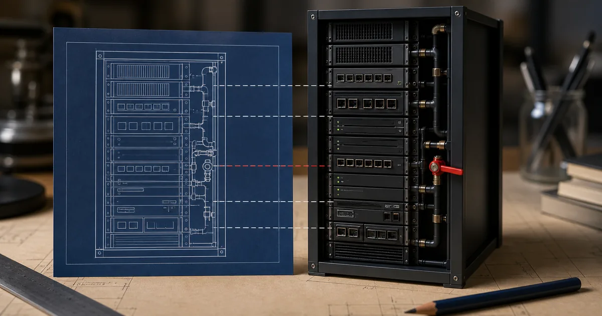
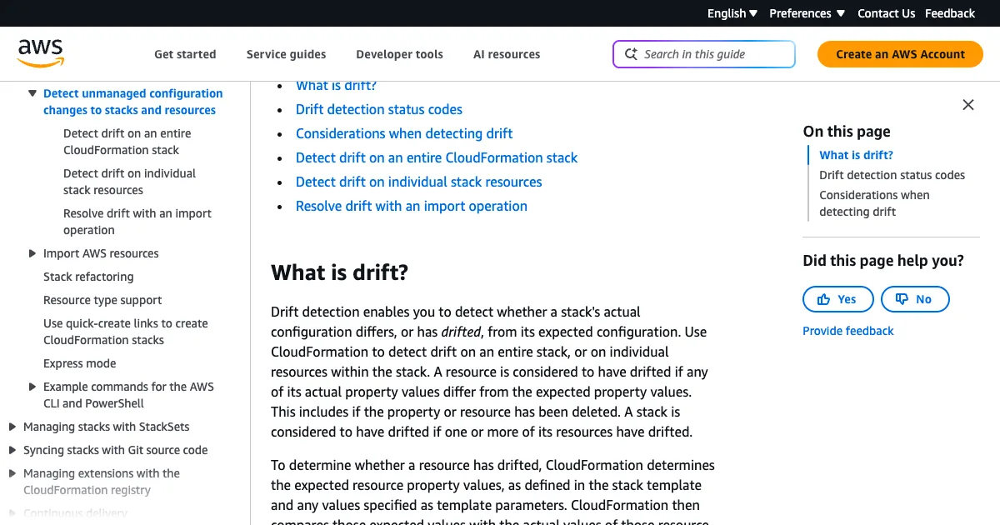
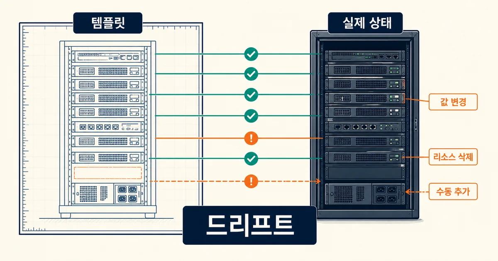
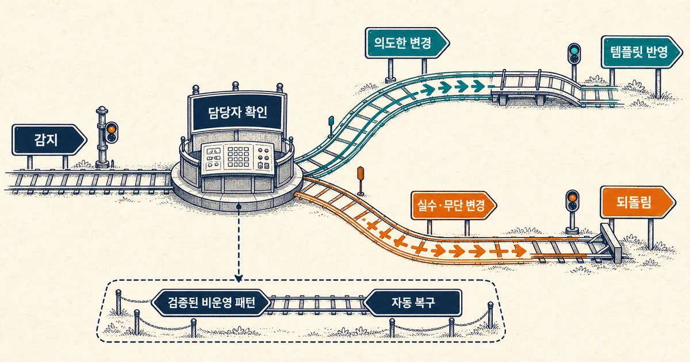

2026. 8. 24 (월) · 약 12분
배포 코드는 그대로인데 운영 장애가 난 뒤 콘솔을 열어 보니 보안 그룹 규칙 하나가 달라져 있다. 누군가 급하게 바꾼 설정이 템플릿에는 남지 않은 전형적인 ClickOps다. AWS가 8월 21일 공개한 실전 가이드는 이 어긋남을 단순 경고로 끝내지 않고, 기존 리소스를 IaC로 가져오고 정기 감지와 사람 검토를 붙이는 흐름을 보여 준다. CloudFormation의 ‘드리프트’가 무엇인지부터 감지 명령, import와 recreate 선택, 자동 복구를 제한해야 하는 이유까지 실제 운영 순서로 이어 본다.

오늘의 핵심뉴스
심층 분석 · AWS Cloud Operations Blog · 2026. 8. 22
AWS, ClickOps를 관리형 IaC로 전환하는 CloudFormation 드리프트 운영법 공개
기존 AWS 리소스를 IaC Generator로 템플릿화하고 CloudFormation 드리프트 감지, 담당자 알림, 제한적 복구까지 이어지는 운영 방법을 다뤘다.
코드가 아니라 실제 인프라가 먼저 바뀌는 순간
장애 대응 중 보안 그룹 포트를 콘솔에서 잠깐 열고, 문제가 끝난 뒤 템플릿에 반영하는 일을 잊을 수 있다. 다음 배포 전까지 서비스는 동작하지만 저장소의 CloudFormation 템플릿과 실제 AWS 리소스는 서로 다른 상태가 된다. 이런 수동 변경을 흔히 ClickOps라고 부르고, 선언된 기대 상태와 실제 상태의 차이를 CloudFormation은 드리프트로 다룬다.
AWS가 8월 21일 공개한 글은 이미 콘솔 중심으로 운영해 온 리소스를 관리형 IaC로 옮기는 흐름을 제시한다. IaC Generator로 기존 리소스를 스캔하고 템플릿을 만든 뒤, import할지 새로 만들지 검토하고, 정기 드리프트 감지와 알림을 붙이는 방식이다. 핵심은 도구 하나를 켜는 것이 아니라 발견·판단·반영 책임을 연결하는 데 있다.

CloudFormation이 비교하는 것은 명시한 속성이다
스택 드리프트 감지는 템플릿의 기대 구성과 실제 리소스 구성을 비교한다. 속성 값이 달라진 리소스는 MODIFIED, 템플릿에 있으나 실제로 사라진 리소스는 DELETED로 나타난다. 다만 템플릿에 값을 직접 적지 않고 서비스 기본값에 맡긴 속성은 비교 대상에서 빠질 수 있다. 운영상 중요한 기본값이라면 템플릿에 명시적으로 넣어야 감지 기준이 된다.

중첩 스택도 주의해야 한다. 상위 스택에서 드리프트 감지를 실행해도 중첩 스택의 내부 리소스까지 자동으로 모두 내려가 확인하지 않는다. 각 중첩 스택에서 따로 감지해야 한다. 리소스 유형별 드리프트 지원 여부가 다르므로 NO_SUPPORT를 정상 일치로 오해해서도 안 된다.
첫 실행은 감지와 상세 조회만 한다
운영 중인 스택에서 처음부터 복구까지 자동화하지 않는다. 감지를 시작하고 완료 상태를 확인한 뒤, 차이가 난 리소스의 expected와 actual 속성을 읽는 세 단계면 충분하다. CloudFormation 문서는 CREATE_COMPLETE, UPDATE_COMPLETE, UPDATE_ROLLBACK_COMPLETE, UPDATE_ROLLBACK_FAILED 같은 상태에서 드리프트 감지를 시작할 수 있다고 안내한다.
# 1) 스택 전체 드리프트 감지 시작
DETECTION_ID=$(aws cloudformation detect-stack-drift \
--stack-name production-api \
--query StackDriftDetectionId --output text)
# 2) 감지 완료와 전체 상태 확인
aws cloudformation describe-stack-drift-detection-status \
--stack-drift-detection-id "$DETECTION_ID"
# 3) 실제 차이가 난 리소스 상세 확인
aws cloudformation describe-stack-resource-drifts \
--stack-name production-api \
--stack-resource-drift-status-filters MODIFIED DELETED대형 스택에서는 감지가 즉시 끝나지 않으므로 detection ID를 저장하고 상태가 DETECTION_COMPLETE인지 확인한다. 결과에는 논리 ID, 물리 ID, 리소스 유형, 예상·실제 속성 차이가 포함된다. 명령 결과를 티켓이나 변경 기록에 붙이고 담당 리소스 소유자에게 먼저 확인을 요청하면, 의도한 긴급 변경을 무심코 되돌리는 사고를 줄일 수 있다.
기존 리소스는 import와 recreate를 구분한다
IaC Generator가 만든 템플릿은 완성품이 아니라 검토 초안이다. 이름, 태그, 정책, 의존 관계, 민감한 값의 파라미터화를 사람이 확인해야 한다. 이미 운영 중인 리소스를 그대로 유지해야 한다면 CloudFormation import를 검토하고, 중단 없이 다시 만들 수 있고 구성 자체를 표준화해야 한다면 recreate가 더 단순할 수 있다.
| 판단 | Import | Recreate |
|---|---|---|
| 적합한 경우 | 데이터·식별자·연결을 유지해야 함 | 새로 만들어도 영향이 작음 |
| 장점 | 운영 리소스를 보존한 채 관리 편입 | 템플릿 기준을 깨끗하게 적용 |
| 주의점 | 가져오기 지원 여부와 식별자 확인 필요 | 중단·데이터 이동·DNS 전환 계획 필요 |
| 완료 확인 | 스택 관리 대상과 실제 리소스 일치 | 구 리소스 제거 전 트래픽·데이터 검증 |
둘 중 어느 쪽이든 IaC Generator 결과를 그대로 배포하지 않는다. 최소 권한 정책, 암호화, 공개 접근, 태그, 삭제·교체 정책을 리뷰해야 한다. 특히 데이터 저장소는 DeletionPolicy와 UpdateReplacePolicy를 명시하고, 템플릿에서 민감한 값을 직접 문자열로 박지 않는지 확인한다.
알림은 넓게, 자동 복구는 좁게 시작한다
AWS 글의 예시는 EventBridge와 Lambda를 이용해 정기 감지를 실행하고 결과를 알리는 구성을 보여 준다. 운영 환경은 6시간, 비운영 환경은 하루 주기 같은 예시가 있지만 서비스 기본값은 아니다. 변경 빈도와 감지 비용, 담당자의 대응 시간을 기준으로 조직이 직접 정해야 한다. 먼저 드리프트가 생겼다는 사실과 리소스 소유자, 마지막 변경 시각을 알리는 것부터 시작하는 편이 낫다.

의도한 변경이라면 실제 상태를 무조건 되돌리기보다 템플릿과 변경 절차를 현실에 맞춰 갱신해야 한다. 실수나 무단 변경이라면 승인된 템플릿을 기준으로 실제 리소스를 되돌린다. 이 판단을 건너뛰고 자동 복구하면 장애 대응 중 의도적으로 열어 둔 설정을 닫거나, 템플릿에 없는 새 운영 요구를 지워 버릴 수 있다.
자동 복구는 영향이 명확하고 반복 시험한 비운영 리소스부터 검토한다. 예를 들어 허용되지 않은 테스트 태그처럼 되돌려도 서비스 동작에 영향이 없는 패턴은 후보가 될 수 있다. 보안 그룹, 데이터베이스, 네트워크 경로, IAM 정책처럼 영향 반경이 큰 리소스는 알림과 사람 승인부터 유지하는 편이 안전하다.
드리프트 감지는 변경 관리와 함께 봐야 한다
CloudFormation 드리프트 결과만으로 누가 왜 바꿨는지는 알 수 없다. CloudTrail 변경 이력, AWS Config 타임라인, 배포 로그, 장애 티켓을 함께 보면 의도를 좁힐 수 있다. AWS가 소개한 drift-aware change sets는 변경 세트를 만들 때 실제 상태를 고려해 예상치 못한 차이를 더 잘 드러내는 방향이지만, 실행 전 검토와 승인 책임을 대신하지 않는다.
- 운영상 중요한 속성은 서비스 기본값에 맡기지 않고 템플릿에 명시한다.
- 스택 감지 뒤 MODIFIED·DELETED·NO_SUPPORT를 나눠 읽는다.
- 중첩 스택은 각 스택에서 별도로 감지한다.
- CloudTrail·AWS Config로 변경 주체와 시각을 확인한다.
- 의도한 변경은 템플릿에 반영하고, 실수·무단 변경만 승인 기준으로 되돌린다.
- 자동 복구는 검증된 비운영 패턴에서 시작하고 운영 핵심 리소스에는 사람 승인을 둔다.
Terraform을 쓰는 팀도 원리는 같다. plan과 refresh 기반 드리프트 확인, HCP Terraform의 상태 평가처럼 실제 상태와 구성을 계속 비교하되, 감지 결과를 배포 승인과 별도 관찰 신호로 다룬다. 도구가 무엇이든 중요한 것은 콘솔 변경을 숨기지 않고 코드와 실제 인프라 중 어느 쪽을 정답으로 채택할지 기록하는 절차다.
작은 스택 하나로 운영 규칙을 먼저 만든다
전체 계정에 스케줄러와 자동 복구를 한 번에 배포하기보다 변경이 잦지만 영향이 작은 스택 하나를 고른다. 첫 주에는 수동 감지와 담당자 확인만 하고, 어떤 차이가 자주 생기는지 기록한다. 둘째 주에는 정기 감지와 알림을 붙이고, 응답 시간과 오탐을 본다. 반복 원인이 확인된 뒤에야 콘솔 권한 제한, import, 템플릿 보강, 선택적 복구 순서를 정할 수 있다.
완료 기준은 드리프트가 항상 0인 상태가 아니다. 긴급 변경이 생겨도 누가 확인하고 언제 템플릿에 반영할지 알 수 있고, 다음 배포 전에 차이가 검토되는 상태가 더 현실적인 목표다. 이 기준이 서면으로 남아야 담당자가 바뀌어도 IaC가 실제 운영 상태를 설명한다.
드리프트 감지는 콘솔 변경을 벌주는 기능이 아니라, 코드와 현실이 갈라진 지점을 다음 배포 전에 드러내는 운영 신호다.
참고한 자료
드리프트 감지는 콘솔 변경을 모두 나쁘다고 판정하는 기능이 아니다. 템플릿과 실제 상태가 달라졌다는 사실을 드러내고, 그 차이가 의도한 변경인지 실수인지 사람이 결정할 시간을 주는 장치다. 의도했다면 템플릿을 현실에 맞추고, 실수라면 실제 리소스를 선언 상태로 되돌린다. 처음부터 자동 복구를 켜기보다 담당자 알림과 승인 기록부터 만들면 IaC를 문서가 아니라 운영 기준으로 유지할 수 있다. 운영 스택 하나에서 detect-stack-drift를 실행하고 MODIFIED·DELETED 리소스의 실제 값과 템플릿 값을 비교한 뒤, 의도한 변경인지부터 담당자와 확인한다.